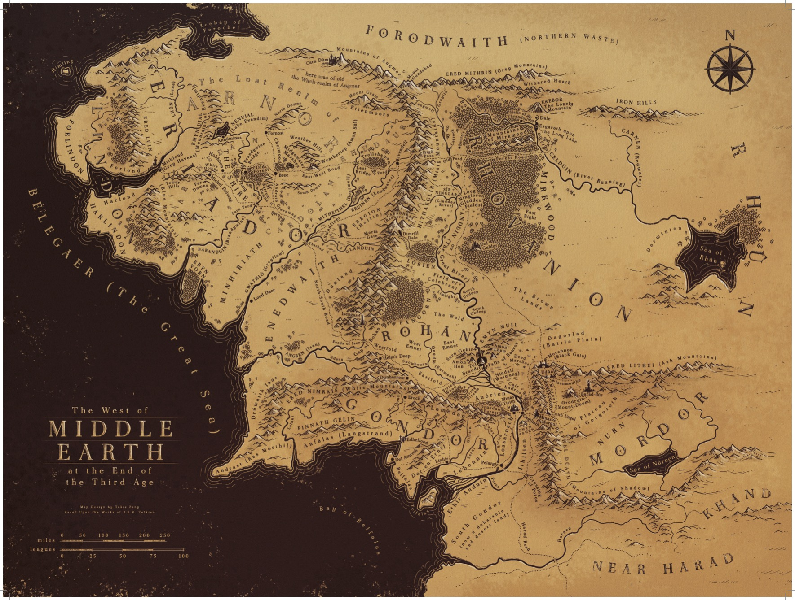

🧙♂️
+
−
⟲
⬆️ Journey Progress ⬆️
Bag End, The Shire
Green rolling hills, comfortable and peaceful
0% Complete
Walked
0
km
Remaining
2863
km
Next Waypoint
Bucklebury
📝 Log Today's Walk
Distance (km)
Note (optional)
➕ Add Entry
🎯 Calibration Mode: OFF
Turn ON, then tap/click the exact waypoint location on the map. It will show x/y % to paste into WAYPOINTS.
Close
🏆